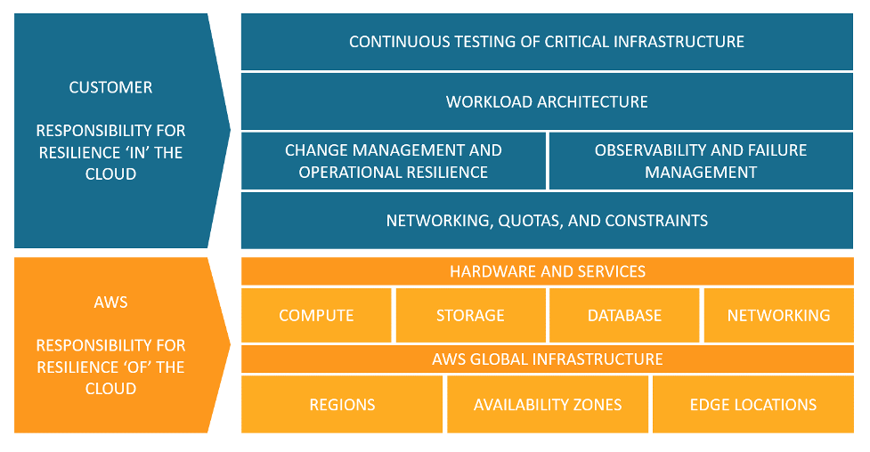

SCC
Brasil
os cloud gurus
Software Cloud Consulting
Your software development, cloud, consulting & shoring company
Reliability
from the 5 pillars of the Well architected Framework

By Wolfgang Unger
What means Reliability from the 5 pillars of the Well architected Framework exactly?
Lets have a closer look what Reliability means in the context of AWS or cloud computing.
The AWS documentation describes Reliability like this:
"The reliability pillar encompasses the ability of a workload to perform its intended function correctly nd consistently when it’s expected to.
This includes the ability to operate and test the workload through its total lifecycle.
This paper provides in-depth, best practice guidance for implementing reliable workloads on AWS"
There are 4 maior topics to look in detail:
Shared Responsibility Model for Resiliency
Resiliency is a shared responsibility between AWS and you.
It is important that you understand how disaster recovery (DR) and availability, as part of resiliency, operate under this shared model.
AWS responsibility - Resiliency of the cloud
AWS is responsible for resiliency of the infrastructure that runs all of the services offered in the AWS Cloud.
This infrastructure comprises the hardware, software, networking, and facilities that run AWS Cloud services.
AWS uses commercially reasonable efforts to make these AWS Cloud services available, ensuring service availability meets or exceeds
Customer responsibility - Resiliency in the cloud
Your responsibility is determined by the AWS Cloud services that you select.
his determines the amount of configuration work you must perform as part of your resiliency responsibilities.
For example, a service such as Amazon Elastic Compute Cloud (Amazon EC2) requires the customer to perform all of the necessary resiliency configuration and management tasks

Design principles
In the cloud, there are a number of design principles, which can help you increase reliability.
Lets have a look on 5 of them:
Automatically recover from failure:
By monitoring a workload for key performance indicators (KPIs), you can run automation when a threshold is breached.
This allows for automatic notification and tracking of failures, and for automated recovery processes that
work around or repair the failure. With more sophisticated automation, it’s possible to anticipate and remediate failures before they occur.
Test recovery procedures:
Testing is not typically used to validate recovery strategies. In the cloud, you can test how your workload fails, and you can validate your recovery procedures.
You can use automation to simulate different failures or to recreate scenarios that led to failures before.
Scale horizontally to increase aggregate workload availability:
Replace one large resource with multiple small resources to reduce the impact of a single failure on the overall workload.
Distribute requests across multiple, smaller resources to ensure that they don’t share a common point of failure.
If these instances are autoscaled by metrics like CPU or others, this will also help you economize money.
Stop guessing capacity:
In the cloud, you can monitor demand and workload utilization, and automate the addition or removal of resources to maintain the optimal level to satisfy demand without over- or under-provisioning.
There are still limits, but some quotas can be controlled and others can be managed.
You do no longer need to do the guesswork of planing your capacity.
Manage change through automation:
Changes to your infrastructure should be made using automation. The changes that need to be managed include changes to the automation, which then can be tracked and reviewed. You should set up a pipeline for your Deployment of IaC with CloudFormation or CDK.
Definitions
This whitepaper covers reliability in the cloud, describing best practice for these four areas:
Take a look in the PDF for more details:
Definitions
Understanding availability needs
Most applications today aren’t monolithic systems with a single availability target.
Generally speaking, you can break an application down into several components, each with different availability requirements.
The microservice architecture established in the last years replaced the monolitic desing pattern.
By breaking your systems down into these component pieces, you can better understand your availability needs, and design your systems to meet those targets in a cost-effective way.
Many AWS customers take a similar approach to critically evaluating their applications and identifying subcomponents with different availability needs.
Availability design goals are then tailored to the different aspects, and the appropriate work efforts are performed to engineer the system.
AWS has significant experience engineering applications with a range of availability design goals, including services with 99.999% or greater availability.
Autor

Wolfgang Unger
AWS Architect & Developer
6 x AWS Certified
1 x Azure Certified
A Cloud Guru Instructor
Certified Oracle JEE Architect
Certified Scrum Master
Certified Java Programmer
Passionate surfer & guitar player